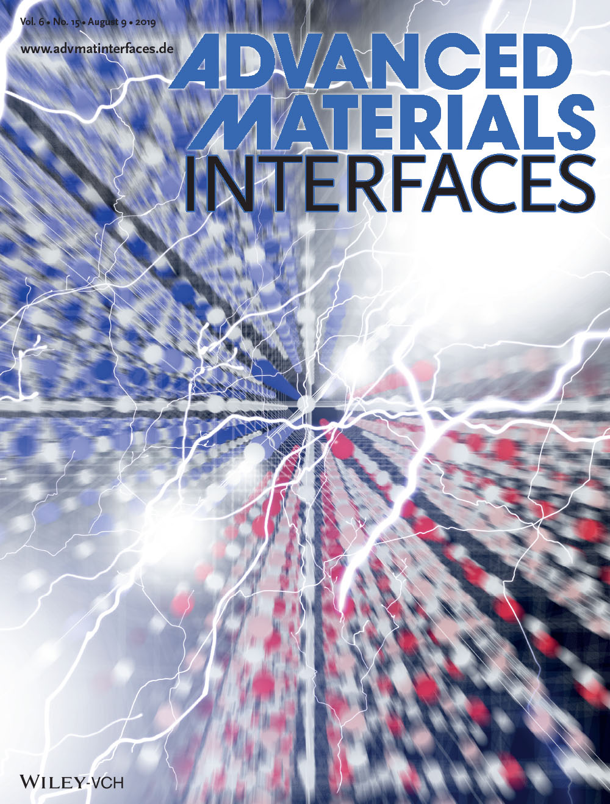
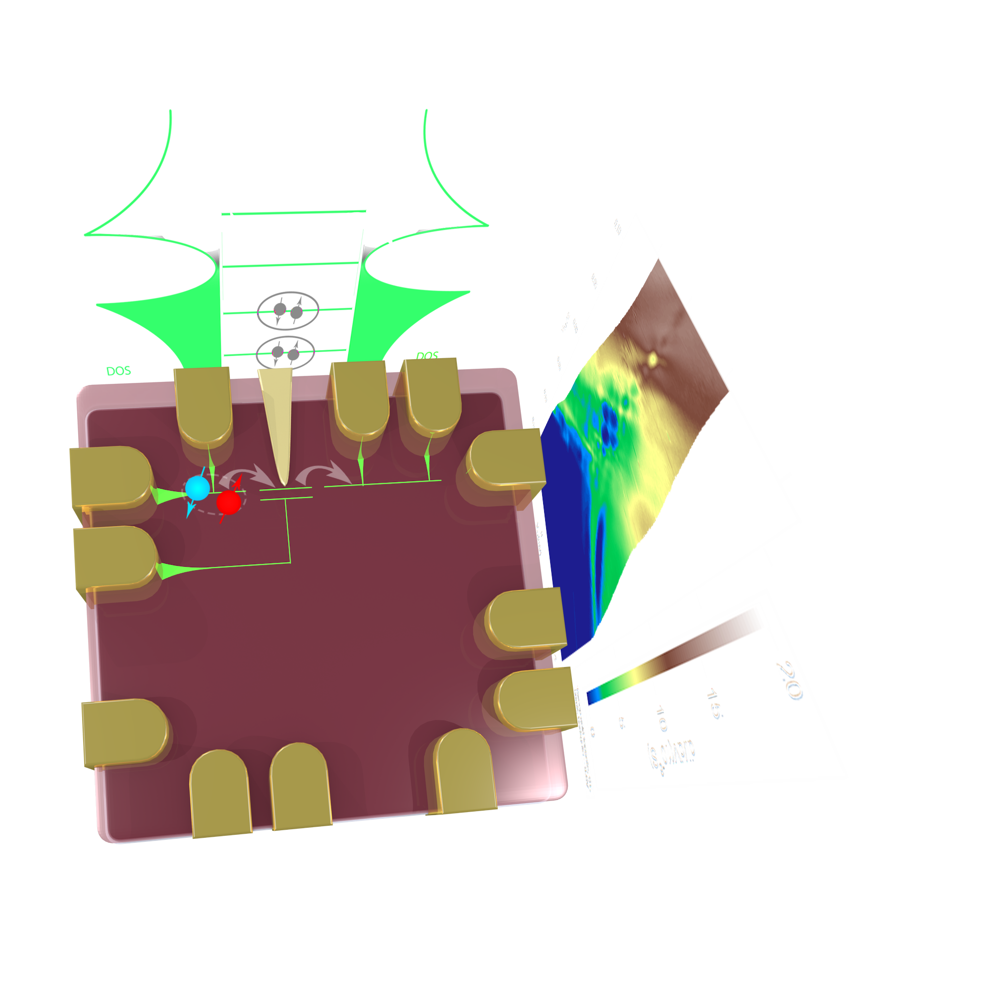

Frictional Drag between electrons at LaAlO3/SrTiO3
For Yuhe Tang, Anthony Tylan‐Tyler, Hyungwoo Lee, Jung‐Woo Lee, Michelle Tomczyk, Mengchen Huang, Chang‐Beom Eom, Patrick Irvin, Jeremy Levy, Long‐Range Non‐Coulombic Electron–Electron Interactions between LaAlO3/SrTiO3 Nanowires, Adv. Mat. Inter., 2019.

Remote Epitaxy
Sandwiching graphene, MoS2 by SrTiO3 and GaAs.

Paired tunneling in Sketched Quantum Dot
Center: device schematics. Quantum dot created with c-AFM lithography, with an in plane sidegate and a gold topgate Top: density of state (single-particle picture). Right: resulting differential conductance.

Local interrogartion of electron pairs
The integer values of the conductance quantization in electron waveguides is a function of applied magnetic field, chemical potential, etc. Local interrogation of evolution of the conductance may help reveal the pairing mechanism of SrTiO3.

More see my Behance.